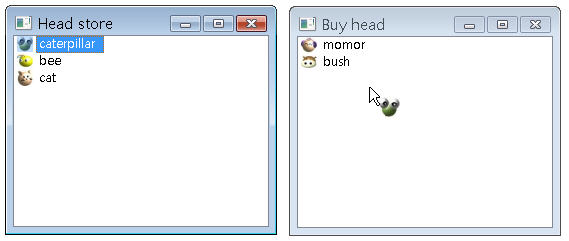

您可以決定何時執行拖放，並設定拖放時要於元件或視窗之間溝通的資訊，要執行拖放的幾個基本動作為：
當拖放行為開始執行時，執行拖放行為的一方會需要知道接受放置的另一方接受何種操作，例如拖放檔案時，當拖放完成時，原檔案是被複製或移動。執行拖放行為的一方會設定可被接受的動作，而接受放置的一方可選擇接受何種動作，並傳回相關資訊給執行方，exec()方法完成後所傳回的資訊作用即是如此。 以下製作一個簡單的清單程式示範拖放的執行與接受，您可以將清單中的項目拖放至另一個清單之中。 通常會重新定義mousePressEvent()，記錄滑鼠按下時的位置，而後再重新定義mouseMoveEvent()，判斷滑鼠按下後移動的距離，是否達到所建議的拖放執行距離： void ListWidget::mousePressEvent(QMouseEvent *event) {
if (event->button() == Qt::LeftButton) { startPoint = event->pos(); } QListWidget::mousePressEvent(event); } void ListWidget::mouseMoveEvent(QMouseEvent *event) { if (event->buttons() & Qt::LeftButton) { if ((event->pos() - startPoint).manhattanLength() >= QApplication::startDragDistance()) { execDrag(); } } QListWidget::mouseMoveEvent(event); } execDrag()中示範了，如何建立QMimeData及QDrag，並使用exec()執行拖放： void ListWidget::execDrag() {
QListWidgetItem *item = currentItem(); if (item) { QMimeData *mimeData = new QMimeData; // 設定所要攜帶的文字資訊 mimeData->setText(item->text()); // 設定所要攜帶的影像資料 mimeData->setImageData(item->icon()); QDrag *drag = new QDrag(this); drag->setMimeData(mimeData); // 設定拖放時所顯示的圖示 drag->setPixmap(item->icon().pixmap(QSize(22, 22))); if (drag->exec(Qt::MoveAction) == Qt::MoveAction) { delete item; } } } exec()方法執行時，設定接受拖放的一端可以採用的動作，接受拖放的一方所打算採用的動作，可使用事件的 setDropAction()來設定，並使用accept()方法接受事件。上面的程式片段中，若接受拖放的一方接受Qt::MoveAction，則 原清單中的項目會被刪除。 若QDragEnterEvent的setDropAction()所設定的動作，不在exec()方法所設定的允許動作中，則會出現禁止符號，表示拖放無法完成： void ListWidget::dragEnterEvent(QDragEnterEvent *event) {
ListWidget *source = qobject_cast<ListWidget *>(event->source()); if (source && source != this) { event->setDropAction(Qt::MoveAction); event->accept(); } } QDropEvent的setDropAction()設定放置時所採取的動作，將成為exec()的傳回值，以下例而言，在接受拖放的清單從 QMimeData中取得文字與圖示並新增項目，QDropEvent使用setDropAction()設定為Qt::MoveAction並accept()之後，exec()將傳回Qt::MoveAction： void ListWidget::dropEvent(QDropEvent *event) {
ListWidget *source = qobject_cast<ListWidget *>(event->source()); if (source && source != this) { QIcon icon = event->mimeData()->imageData().value<QIcon>(); QString text = event->mimeData()->text(); addItem(new QListWidgetItem(icon, text)); event->setDropAction(Qt::MoveAction); event->accept(); } } dragMoveEvent()在這個例子中，直接覆寫保持空白，這是為了要覆寫父類別的dragMoveEvent()定義 void ListWidget::dragMoveEvent(QDragMoveEvent *event) {}
以下是完整的程式範例參考：
#ifndef LISTWIDGET_H
#include "ListWidget.h"
#include <QApplication> 程式的執行畫面如下所示：  dragMoveEvent()可以用於將拖放的區域限制在某個範圍中，在Qt的 Drag and Drop 文件中有個例子： void Window::dragMoveEvent(QDragMoveEvent *event) {
if (event->mimeData()->hasFormat("text/plain") && event->answerRect().intersects(dropFrame->geometry())) { event->acceptProposedAction(); } } 接受拖放的一方可以直接執行拖放事件的acceptProposedAction()接受所建議的動作，或者是使用proposedAction()來判斷不同的動作該採取的行為： if (event->proposedAction() == Qt::MoveAction) {
event->acceptProposedAction(); // 處理事件 .... } else if (event->proposedAction() == Qt::CopyAction) { event->acceptProposedAction(); // 處理事件 .... } else { // 處理事件 .... return; } 您不僅可以在拖放時攜帶文字或圖片，符合 MIME 類型 的資料都可以於拖放時攜帶，或者您也可以將資料轉換為QByteArray，使用QMimeData的setData()方法設定以進行拖放時資料的攜帶。 |